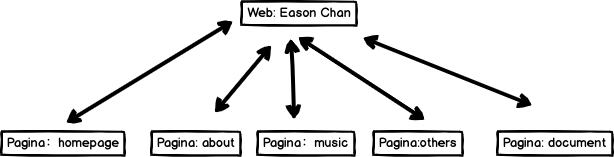
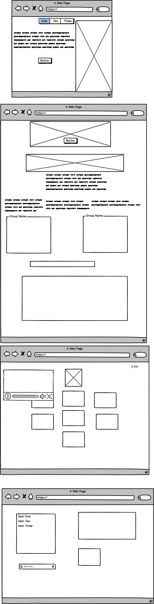

Documentazione
AbstractMi piace molto ascoltare la musica,soprattuto le cazoni liriche e quelle in Cantonese, quindi sono una fan di Eason Chan.Ho fatto questo web sia per presenta lui e le sue canzoni a più persone,sia per condividerlo con i altri fans. Questo sito include 4 pagine, l'ho fatto il home page da zero e i altri uso il demo di Templated.Io ho aggiunto tante canzoni e video nel sito per raggiungere lo scopo di promuovere sua musica.
Benchmarketing1.ObiettiviIl sito è realizzato semplicemente per permettere all’utente una prima conoscenza di EC, in particolare della sua performance musicale, e di ascoltare le canzoni che canta.
2.Target UtentI target utenti sono le persone a chi piaciono le canzoni liriche cinesi o a chi interessano a E.Chan.Non ci sono i limiti del sesso e anno. 3.CompetitorsEsiste un sito officiale su Fans Club di E.Chan (https://www.easonfans.com/forum/index.php).Ci sono tutti informazioni di E.Chan, anche ha creato una buona piattaforma per le comunicazioni tra i fans.Ma così costa più di tempo a vederlo,anche questo sito è in Cinese, non è comodo per presentare E.Chan ai stranieri.E i altri competitors ho trovato sono https://www.discogs.com/artist/2388878-Eason-Chan, https://rateyourmusic.com/artist/eason_chan e https://www.thestar.com.my/news/nation/2019/11/23/eason-chan-cancels-hk-concerts. Questi siti sono completo di contenuto testuale, hanno generalmente uno solo tipo di info(introduzione oppure music list). Loro siti include tante persone famosi su tutto il mondo, quindi nonostante i ricchi contenuti e link, hanno niente di speciale e di personale. Il mio sito, invece,più laconico, da un veloce impressione ai utenti, visivo e uditivo.4.Struttura e Layout
 5.Look and FeelI main colori del sito sono grey e balck, colori di questo tipo fa il sito più semplice, e i utenti possono concentrare ai contenuti e alla musica. Anche il stesso modo per la scelta di background. Per rimuovere il noioso, ho messo javascript a fare effetto dinamico.
Linguaggi1.Html -- Creazione2.Css -- Formalizazione grafica3.Javascript -- Effetto dinamico
Strumenti 1.Model html di Template. 2.Video di Pexels. 3.Github per la pubblicazione 4.Google Analytics per la collezione dei dati. 5.Widget social: javascprit per l'effetto dinamico. 6.Formspree per ricevere feedback dai utenti. 7.Balsamiq per fare la rappresentazione del wireframe.
Communication StrategyBackgroundL'obiettivo del mio sito è dare velocemente l'utente una introduzione di E.Chan e le canzioni. A differenza dei competitori, la mia pagina web non contiene informazioni dettagliate sulla vita personale e collegamenti correlati, focalizza solo sull'ascolto e sulla valutazione delle canzoni. Poche informazioni possono anche essere una motivazione per motivare le persone a cercare informazioni pertinenti.
Obbiettivi Comunicativi -Target Utent Primario: le persone chi sono interesse di E.Chan e i canzoni poppolari cinesi.-Il mio sito viene raggiunto in quanto gli interessati cercano E.Chan o le canzone popolari cinesi, anche viene raggiunto quando il sito è stata raccomandata a loro.Target Utent Secondario: 1.I fans di E.Chan, per loro, il sito è un metodo di condivedere info, anche un metodo per introdurre E.Chan.2.Utenti casuali del web.Dello stato attuale voglio aggiungere i suoi eventi precedenti di E.Chan, creare una pagina più dettagliata per descrivere i concerti , ingrandire la pagina d'organizazione in futuro e il link per acquisto i biglietti.
PromotionI mezzi usati per la promozione:1.Pubblicarlo sul social network, come WeChat Moments,WeiBo,facebook2.Condiverlo in groups.
Valutazione dei risultatiL'obiettivo è stato raggiunto.Ho ricevuto molti likes sul social app,e alcuni amici hanno usato il mio sito per presentare E.Chan ai altri.I dati di Google Analytics può quantificare il successo.